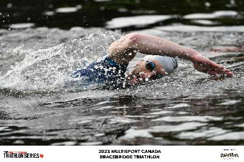
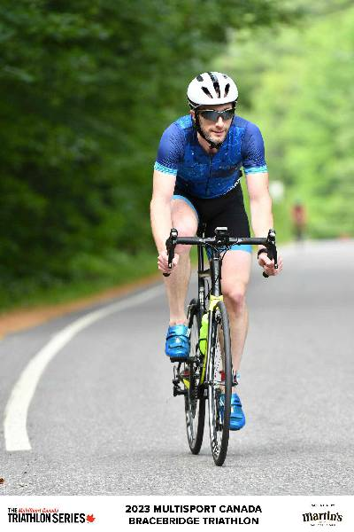
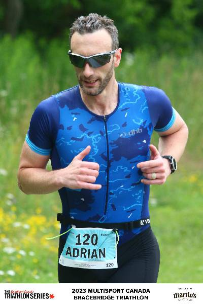
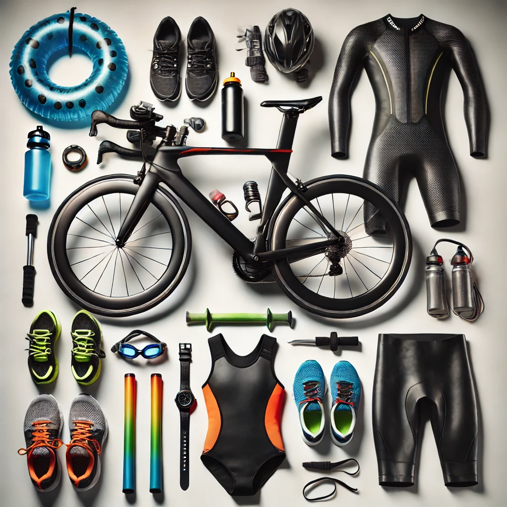

Introduction
Triathlon is a sport that demands efficiency, endurance, and the right gear to perform at your best. Over the years, I’ve refined my equipment to balance performance and budget. In this post, Ill walk you through my current triathlon gear setup—from my bike and running shoes to the smallest yet crucial accessories that make a difference on race day.
But before I do that, just remember that I accumulated this kit over more than ten years. If you are just starting out I would suggest you do not get yourself pulled into the kit-craze: you can enjoy triathlon without all the gear that I have.
2025 Kit
Swim

- Wetsuit: A fairly basic DHB from the now defunct Wiggle. I will probably replace it soon-ish, but for not it will do.
- Googles: Zoggs predator and Decathlon B-Fast 900
- Pool toys: All Finis.
- Paddles: Finis Agility paddles. Love them. They go in out very quickly, no fiddling around with the elastic, and i think they do help you with your catch timing
- Board: Alignment kick-board. It looks a bit odd, but I love the flexibility and how it helps you to be always streamlined in the water during every drill
- Pull buoy: Just a traditional looking Finis pull buoy
- Fins: Finis Zoomer
- Snorkel: Finis Original Swimmer’s Snorkel
- Swim timer: Finis Tempo Trainer Pro.
Bike

- Bike: Giant Propel Advance 2, 2017 model. All components are stock (Shimano 105), except for the wheels and the seat.
- Wheels: Bracciano A42.
- Tires: Continental Grand Prix 5000. I love how fast they feel (and I guess are).
- Power meter: Favero Assioma Duo.
- Racing shoes: Shimano TR9. It is probably time to change them, but when I do I will likely go for the same model.
- Training shoes: Fizik Tempo
- Seat: ISM P2.0 - 40
- Turbo trainer: Tacx Bushido Smart. It has been discontinued many years ago, and it’s ERG mode does not really work anymore. But I do not use Zwift or anything like that. I just use the progressive resistance and the Assioma to monitor power. Old school. And it works for that.
- Aero bars: Red Shift Quick Release Clip-On Aero Bar. I used them in 2024, but they will stay off the bike this year as I am targeting draft legal races.
- Hydration system: Profile Design Aero HC system. It works, but do not drop it: the bullet-shaped lid will shatter and you cannot replace it.
- Turbo trainer tires: Some Vittoria ones.
- Bike computer: Garmin Edge 820. Another bit of kit I might change soon. The battery barely last 2h if I leave bluetooth and ANT+ on.
Run

- Training shoes: In the past couple of years I discovered Hoka shoes and I love them. I currently have a pair of Mach 5.
- Racing shoes: Hoka Rocket X2
- Power meter: Stryd.
Miscellaneus

- Bike bags: A selection of cheap ones. I usually have a large-ish one under the saddle in training. During races I have no bag or a small top-tube one.
- Wetsuit repair: This is the black paste you can use to repair small holes in a neoprene wetsuit. I have been using a brand called Witch for many years. I do not know if it is better or worse than others, but it works for me.
- Wetsuit zipper lube: This is another one of those thing you buy once and it will last for ages. It is a tube with a hard wax stick inside, You use the wax to lubricate the zipper in the wetsuit to make sure it does not jam when you try to put it on or, more critically, to take it off in T1.
- Swim caps: Nothing special here. If you have been in triathlon you know that in quickly accumulate a large amount of swim caps from expos and races. That’s what I use. I just prefer to use silicone caps rather than latex caps.
- Swim suit: Nothing fancy here. I have been using Speedo’s Endurance for a while, and I have no reason to change them.
- Run belt: The smaller the better. I hate carrying stuff on a run. Currently I use a Spibelt.
- Winter spikes. I use some small spikes from Nortec unless it is really icy. In that case, I opt for a pair of SH500 by Decathlon.
- Headphones: Shokz OpenRun for runs, Bose QuiteComfort for the turbo trainer. I do not use headphones for outdoor rides or swims.
- Run light: The brand apparently is Suptig…Some cheap stuff from Amazon. The only thing I care about is that it is a chest light with front and rear light. I do not like headlamps.
- Tri suit: The one I use the most is a DHB from Wiggle. This year I will be also using the official Canada Trisuit from ZER0D. Watch: Garmin Fenix 5 Plus. This one is getting old too, but its scratches are a testament of all the adventures we had together.
- Heart rate: Scosche Rhythm R+ 2.0.I also have a Garmin HRM-swim, but I’ll probably sell it since I never use it.
- Bike pump: At home, an electric MotoMaster tire inflator, on the road a Xiaomi Portable Electric Air Compressor 2. For emergencies, a generic floor pump with a pressure gauge.
- Bike luggage: I do not know the brand. It is a semi-rigid one, with space for the bike and the wheels.
- Strength and conditioning:
- I love resistance bands. They are light and versatile, so you can easily take them with you when you travel. I have a set of longer ones from Kylin, some shorter ones from Gritin, and the Finis Dryland cord.
- Foam roller
- Pin roller
- Massage gun (AusoQe)
- Tyr Aquatic resistance swim belt: A harness thing that you can use to swim in hotel-like pools, or if you want to do very specific high intensity efforts. You attach one end to yourself and the other to something solid that does not move, and you have your own endless pool.
- Software: Beside Garmin Connect and Strava, I used Training Peaks for many years. However, in the past couple of years I dropped it in favour of Humango.
- Nutrition: Nothing crazy hear. I take whey protein powder, creatine, and some vitamins and minerals supplement. For the long bike sessions, just whatever carbs gels does not upset my stomach and I find easy to take, and some hydration salts in the water bottle. Since I do sprint races, I do not really need to worry about in-race nutrition.
- Race bag: Van Rysel Aptonia Triathlon Bag (35L).
- Cold water swim: I hate cold water swim, so I try not to do it. But if I have to, here’s what I use neoprene socks and gloves from Blueseventy
- Sunglasses: Some very old Decathlon ones. I love that they have interchangeable lenses (dark, transparent, and low light), but by now the rubbery frame smells pretty bad. I’ll probably replace them with some Rockbros with interchangeable lenses.
What’s in your triathlon kit? Let me know in the comments!